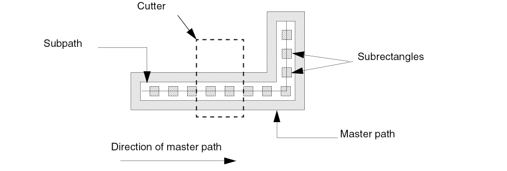
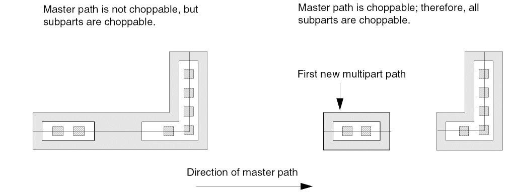

Chopping a Multipart Path
To cut away part of a multipart path that has one subpath and one set of subrectangles:
- In the layout window, choose Edit – Basic – Chop.
- Select the multipart path.
-
Create a chop rectangle around the master path to identify the parts you want to cut away.
To chop a multipart path or its choppable subparts, you must chop all the way through the master path. It is not necessary to chop through subparts.
The results of the chop depend on whether the master path is choppable or not, as shown below.

Related Topics
Selecting a Whole Multipart Path
How Chopping Affects Multipart Paths
Return to top